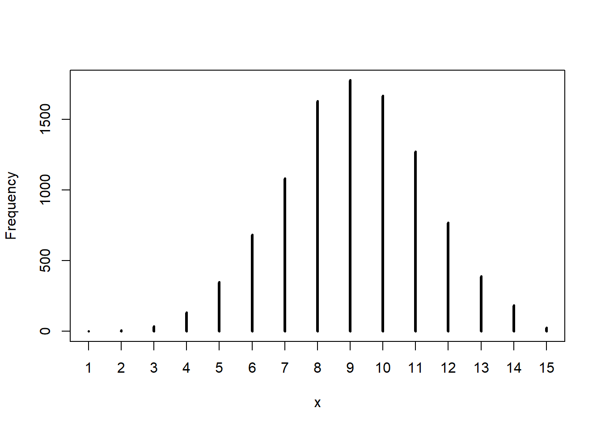
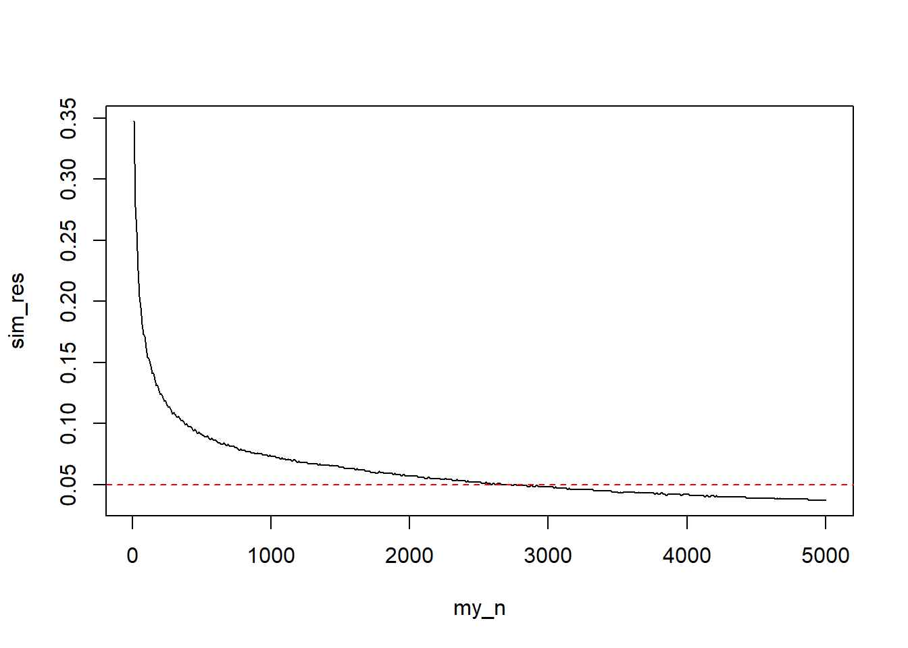
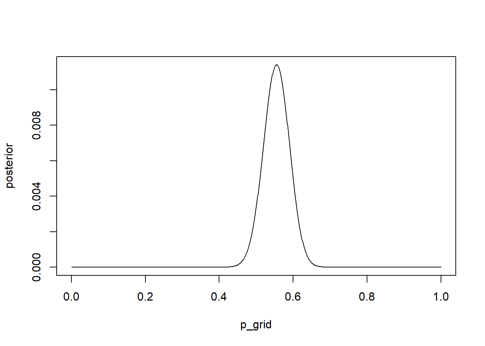
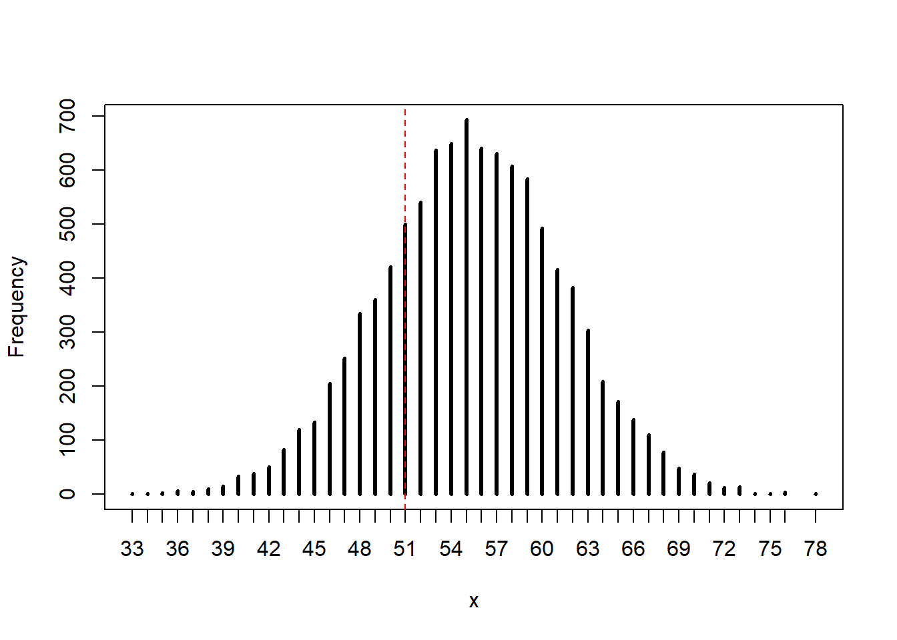
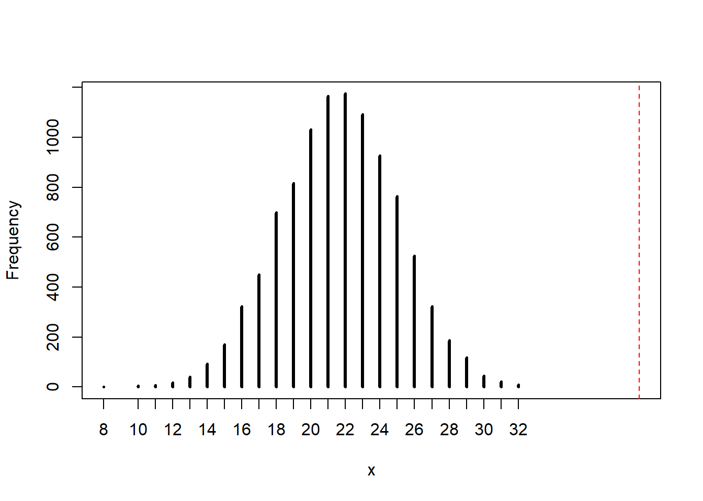

p_grid <- seq(from = 0, to = 1, length.out = 1000)
prior <- rep(1, times = 1000)
likelihood <- dbinom(6, size = 9, prob = p_grid)
posterior <- likelihood * prior
posterior <- posterior / sum(posterior)
set.seed(100)
samples <- sample(p_grid, size = 1e4, prob = posterior, replace = TRUE)This chapter discusses the basics of sampling – instead of directly approximate the density of the posterior distribution, we can draw samples from it. This seems silly for simple distributions, but scales to otherwise intractable problems. Once we have the samples, we can use those to estimate the posterior density.
Chapter notes
- “Fetishizing precision to the fifth decimal place will not improve your science.”
- The HDPI and PI methods for constructing credible intervals are similar for bell-shaped curves, but will be different for highly skewed curves where the mode and mean are different. “If the choice of interval affects the inference, you are better off plotting the entire posterior distribution.”
- The HDPI also has higher simulation variance, that is, it needs more samples than the PI to arrive at a stable result.
- Choosing a point estimate, such as the mean, median, or mode (maximum a posteriori value) can be difficult.
- Importantly, different loss functions imply different estimates. The absolute loss function, \(L(\theta, \hat{\theta}) = \left| \theta - \hat{\theta} \right|\) is minimized by the median; the quadratic loss function, \(L(\theta, \hat{\theta}) = \left( \theta - \hat{\theta} \right)^2\), is minimized by the mean; and the 0-1 loss function (different for discrete and continuous problems) is minimized by the mode and corresponds to maximizing the posterior likelihood.
- While frequentist methods rely on sampling distributions and the (theoretical) physical act of random sampling, Bayesian models do not! The “sampling” we are doing here is small world sampling – our samples are from the model, we don’t expect them to be “real.”
- Dummy data generated by the prior predictive distribution, the distribution of the parameters of interest using only the priors and not the data, help us build models. These simulations can tell us whether the priors are reasonable or not.
- Once we update the model with the data, we can generate samples from the posterior predictive distribution. These samples can help us check how accurate the model is or how well it fit. This distribution is “honest” because it propagates the uncertainty embodied in the posterior distribution of the parameter of interest.
Exercises
For the easy exercises, we need the following code given in the book.
3E1. How much posterior probability lies below \(p = 0.2\)?
mean(samples <= 0.2)[1] 4e-043E2. How much posterior probability lies below \(p = 0.8\)?
mean(samples <= 0.8)[1] 0.88843E3. How much posterior probability lies between \(p = 0.2\) and \(p = 0.8\).
We could calculate this directly.
mean((samples >= 0.2) & (samples <= 0.8))[1] 0.888Or if we had stored the previous calculations, we could have used those instead.
mean(samples <= 0.8) - mean(samples <= 0.2)[1] 0.8883E4. 20% of the posterior probability lies below which value of \(p\)?
quantile(samples, probs = c(0.2)) 20%
0.5185185 3E5. 20% of the posterior probability lies above which value of \(p\)?
quantile(samples, probs = c(0.8)) 80%
0.7557558 3E6. Which values of \(p\) contain the narrowest interval equal to 66% of the posterior probability?
rethinking::HPDI(samples, prob = 0.66) |0.66 0.66|
0.5085085 0.7737738 3E7. Which values of \(p\) contain 66% of the posterior probability, assuming equal posterior probability both above and below the interval?
rethinking::PI(samples, prob = 0.66) 17% 83%
0.5025025 0.7697698 3M1. Suppose the globe tossing data had turned out to be 8 water in 15 tosses. Construct the posterior distribution, using grid approximation. Use the same flat prior as before.
p_grid <- seq(from = 0, to = 1, length.out = 1000)
prior <- rep(1, times = 1000)
likelihood <- dbinom(8, size = 15, prob = p_grid)
posterior <- likelihood * prior
posterior <- posterior / sum(posterior)3M2. Draw 10000 samples from the grid approximate prior abnove. Then use the samples to calculate the 90% HDPI for \(p\).
set.seed(100)
samples <- sample(p_grid, size = 1e4, prob = posterior, replace = TRUE)
rethinking::HPDI(samples, prob = 0.90) |0.9 0.9|
0.3343343 0.7217217 3M3. Construct a posterior predictive check for this model and data. This means simulate the distribution of samples, averaging over the posterior uncertainty in \(p\). What is the probability of observing 8 water in 15 tosses?
ppc <- rbinom(1e4, size = 15, prob = samples)
mean(ppc == 8)[1] 0.14993M4. Using the posterior distribution constructed from the new (8/15) data, now calculate the probability of observing 6 water in 9 tosses.
ppc2 <- rbinom(1e4, size = 9, prob = samples)
mean(ppc2 == 6)[1] 0.18423M5. Start over at 3M1, this time using a prior that is zero below \(p = 0.5\) and a constant above \(p = 0.5\).
First we approximate the posterior and take samples.
# I should name these different things but I am not going to.
p_grid <- seq(from = 0, to = 1, length.out = 1000)
prior <- ifelse(p_grid < 0.5, 0, 2)
likelihood <- dbinom(8, size = 15, prob = p_grid)
posterior <- likelihood * prior
posterior <- posterior / sum(posterior)
set.seed(100)
samples <- sample(p_grid, size = 1e4, prob = posterior, replace = TRUE)Now we’ll do the first posterior predictive check and estimate the probability. Note that the true probability (if \(p = 0.7\)) is \(0.08113\).
ppc <- rbinom(1e4, size = 15, prob = samples)
mean(ppc == 8)[1] 0.163It looks like this estimate is actually slightly worse with this prior than it was with the uniform prior. However, they are fairly similar.
And the second check. Note that the true probability is \(0.2668279\)
ppc2 <- rbinom(1e4, size = 9, prob = samples)
mean(ppc2 == 6)[1] 0.2353This estimate is much closer to the true value than the previous estimate was. It seems that this prior allows us to more accurate estimate probabilities close to the true value (\(p = 0.7\)), but not near the lower boundary for the prior. We can examine the histogram.
rethinking::simplehist(ppc)
We can see that the low values are extremely low, but so are the high values. We would expect the mode to be around 10 or 11, but since we observed 8 / 15, it makes sense that we get a higher estimate of the probability of this occurring than what we “know” is true.
3M6. We want to construct a 99% percentile interval of the posterior distribution of \(p\) that is only 0.05 wide. How many times will we have to toss the globe to do this?
To me, this question seems phrased in the general, but I think it is impossible to answer in general. So we’ll do our best. First let’s look at the width of the current PI.
rethinking::PI(samples, prob = 0.99) |> diff() 100%
0.3243243 That’s much larger than what we want, but we only tossed the ball 15 times. So we’ll need to do some simulating to solve this problem. I know this is not the “true” probably, but for the sake of keeping with this model, I’ll make sure all of our larger samples have (approximately) the same \(8/15\) probability of water.
I’ll also continue using the flat prior. The answer to this question depends on both the “true” value of \(p\) and the prior that we used.
one_sim <- function(N) {
likelihood <- dbinom(floor(N * (8/15)), size = N, prob = p_grid)
posterior <- likelihood * prior
posterior <- posterior / sum(posterior)
set.seed(100)
samples <- sample(p_grid, size = 1e4, prob = posterior, replace = TRUE)
out <- rethinking::PI(samples, prob = 0.99) |> diff()
return(out)
}
my_n <- seq(from = 10, to = 5000, by = 10)
sim_res <- purrr::map_dbl(my_n, one_sim)
plot(sim_res ~ my_n, type = "l")
abline(h = 0.05, col = "red", lty = 2)
Visually, we can see that around 3000 samples are necessary, let’s get the exact estimate.
index <- min(which(sim_res < 0.05))
cat("n: ", my_n[index], "; width: ", sim_res[index], sep = "")n: 2740; width: 0.04905405Hard Problems
For the hard problems, we need to load the indicated data set.
data(homeworkch3, package = "rethinking")
combined <- c(birth1, birth2)3H1. Use grid approximation to compute the posterior distribution for the probability of a birth being a boy.
p_grid <- seq(from = 0, to = 1, length.out = 1000)
prior <- rep(1, times = 1000) # Uniform prior
likelihood <- dbinom(sum(combined), size = length(combined), prob = p_grid)
posterior <- likelihood * prior
posterior <- posterior / sum(posterior)
plot(posterior ~ p_grid, type = "l")
3H2. Draw 10000 random samples from the posterior, and use these to estimate the 50, 89, and 97 percent HDPIs.
set.seed(100)
samples <- sample(p_grid, size = 1e4, prob = posterior, replace = TRUE)
rethinking::HPDI(samples, prob = c(0.5, 0.89, 0.97)) |0.97 |0.89 |0.5 0.5| 0.89| 0.97|
0.4824825 0.4994995 0.5265265 0.5725726 0.6076076 0.6296296 3H3. Simulate 10,000 replicates of 200 births. Compare the distribution of predicted counts to the actual count. Does it look like the model fits the data well?
set.seed(100)
ppc <- rbinom(1e4, size = 200, prob = samples)
rethinking::simplehist(ppc)
abline(v = sum(combined), col = "red", lty = 2)
In this particular simulation, the observed value (111 boys) is a central, likely outcome of the posterior predictive distribution. The model seems to fit the data well, although there is a fairly large amount of spread.
3H4. Now compare 10,000 counts of boys from 100 simulated firstborns only to the number of boys in the first births.
set.seed(100)
b1_samp <- rbinom(10000, size = 100, prob = samples)
rethinking::simplehist(b1_samp)
abline(v = sum(birth1), col = "red", lty = 2)
The model seems to overestimate the number of firstborn boys. This could potentially be because our observed count of boys is slightly higher than 50% (\(0.56 \%\)) and this overestimation becomes more prominent in the smaller sample size. However, the true value is not in the tails of our distribution, so we would probably capture it in a CI.
3H5. Our model assumes that sex of first and second births are independent. We can check this assumption by focusing on second births that followed female firstborns. Compare 10,000 simulated counts of boys to only those second births that followed girls.
# Get the correct count
n <- sum(birth2[birth1 == 0])
# Run the simulation
b2_samp <- rbinom(1e4, size = n, prob = samples)
# Plot the results
rethinking::simplehist(b2_samp, xlim = c(min(b2_samp), max(n, max(b2_samp))))
abline(v = n, col = "red", lty = 2)
Wow, the number of boys who follow girls is much larger than our model predicts. Either our sample is far away from the “real” value (although this is really more of a frequentist notion), or more likely, the assumption of our model is wrong.